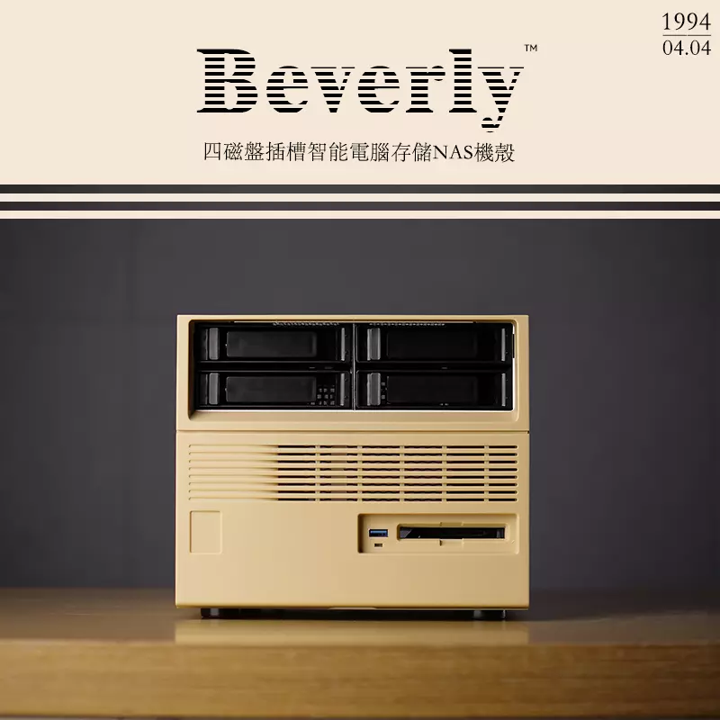

装机小记
缘起
在此前很长一段时间里，我一直将 QNAP TS-212P3 与嘉立创泰山派开发板搭配作为 NAS 使用。TS-212P3 是威联通在 2018 年推出的一款入门级家用双盘位 NAS，拥有 ARM 四核 1.4GHz 处理器、1GB DDR4 不可扩充内存、单 RJ45 千兆网口等今天看来可列为「电子垃圾」级别的硬件配置，但万幸即使是在 2025 年，威联通仍在为其提供新系统适配。泰山派开发板是我偶然间在闲鱼看见并购入的，卖家对其进行了一些改造，其主要配置如下：主控芯片 RK3566、8G 内存、64G EMMC 闪存、官方扩展底板，与 TS-212P3 相比堪称豪华，我将其刷入 Armbian 系统、安装 CasaOS 和 Docker 之后，再通过 NFS 协议将 TS-212P3 的空间挂载到泰山派，勉强组成了一套 NAS 系统。直到前段时间，我偶然发现了一个名为「小宝藏」的四盘位 NAS 机箱，其独特的复古外观和相对低廉的售价让我最终下定决心将老 NAS 系统淘汰，再组装一台新的 NAS。

硬件与组装
选择硬件之前先讲讲我对 NAS 的功能需求，其实简单总结就两方面：文件备份和影音娱乐。我在工作中需要经常使用相机拍照记录工作情况，同时也要为不同项目编写大量 Office 表格和文档文件，这些照片和文件都需要进行分类备份，除此之外，我还需要使用 Docker 运行诸如 qBittorrent、思源笔记等其他程序，PT 下载的影音和电子书文件也需要占用不小的硬盘空间。碰巧的是，我此前不久才将家中闲置的二手的 NUC9 拆分售卖，还剩下一些未处理的零件，梳理老 NAS 以及 NUC9 遗产情况如下：3.5 寸 4T 西数紫盘 ×2、2.5 寸 1T 西数蓝盘 ×1、M.2 SSD×2（256G×1、2T×1）、SATA SSD×1（256G）、笔记本DDR4 内存条 ×4（8G×2、16G×2）、技嘉魔鹰 6600XT 显卡×1。
由于机箱是本次装机的起源，故所有硬件都需要基于机箱的要求进行选配，查阅「小宝藏」详情页面可知，其最适合的主板以及散热组合应为 ITX 主板搭配下压式散热器、电源最好选用标准 SFX 规格、显卡最大尺寸 240×120。四处查阅资料过后，我将板 U 组合定为 i3-12100F + 铭瑄 H610itx 2Lan 版本，如果要说原因的话就五个字——「便宜且够用」：i3-12100F 应该是目前最具性价比的 CPU 之一，其性能用于满足我的使用需求甚至还有些过剩；铭瑄 H610itx 2Lan 是相对较新的版本，与之前的 H610itx 相比，最大的特点是拥有 2 个 M.2 接口（PCIE 4.0×1、PCIE 2.0×1）和 2 个网口（2.5G×1、1G×1），再加上 4 个 SATA 接口，我现有的所有硬盘都能被利用上。接下来遇到了两个问题，一是台式机主板不能兼容笔记本内存条，二是我现有的显卡尺寸超过了机箱所能支持的最大尺寸，不过幸好还有万能的闲鱼，将 4 条笔记本内存和 6600XT 出掉之后，我再次购入了一对 8G DDR4 套条和一块 Intel Arc A380 显卡。值得一说的是这张蓝戟出品的 Intel Arc A380 Photon OC 显卡，这是蓝戟对原版 A380 进行超频之后的性能加强版本，其官方尺寸数据为 222×114×42mm（不含挡板），需要使用单 8pin 供电，而我选择它的最大原因只是出于好奇。在以上部件都确认好之后，散热器和电源的选择自然就很简单了，在此不过多赘述。
装机的过程其实没有什么好说的 ，机箱设计师也发布了装机教程视频，只需要跟教程一步一步动手就能装好，但我在这里还是要说两个我遇到的小问题。第一个是显卡尺寸，如前所述，我购买的这张卡官方标称尺寸数据为 222×114×42mm（不含挡板），看似满足机箱的要求，但我忽略了一个问题——PCIE 供电线接口，在插上供电线之后，这张卡的高度直接来到了大概 130mm，这也导致机箱顶盖硬盘仓无法安装，解决方案有两种：一是从开始就规避超高的风险，直接选用带全高挡板的半高刀卡；二是跟我一样，将其更换为不带独立供电的版本。第二个问题出在装机经验不足，在将所有硬件塞入机箱并确认电源接线无误之后，插上电却一直无法点亮，我分别咨询了主板和机箱商家的客服问题是否出自开机跳线的插入方向，前者给我提供了针脚的正负极标识图，后者则告知我开机跳线不分正负极，在几次反复排查之后，我最终发现了原因——开机 LED 灯跳线插反了。
系统选择
在系统选择这一步我没有再使用 Linux+CasaOS 的老方案，虽然 CasaOS 作为 Docker 网页管理来讲也做到了简洁易操作，但 Immich、Jellyfin、Emby 等服务还是要靠自己手动部署，镜像加速配置起来也稍嫌麻烦，而且 CasaOS 团队最近的开发重心已经转移到了团队的新产品 ZimaOS 上面，CasaOS 的更新频率也是肉眼可见的越来越低。另外，我还看到很多人推荐使用 ESXi 或 PVE 作为底层系统，通过搭建不同的虚拟机来实现不同的功能（如 NAS、软路由等），我个人不太喜欢这种「ALL IN ONE」的玩法，可能是出于对自身相关知识储备不太丰富的担忧，我总觉得这种方案不稳定，一旦出现问题自己也没有能力解决，再加上我这套硬件也不太能满足多开虚拟机的性能要求，于是也就作罢。为了不那么麻烦，我最终选择了飞牛，相较其他 NAS 系统而言，飞牛既没有黑群晖非法授权的「原罪」和功能限制所带来的种种不便，也没有 UnRAID 和 TrueNAS 的那样高的学习门槛，并且官方还有智能相册和自带刮削器的影视功能，对我来说这个系统是真正可以「开箱即用」的。
总结
机器已经装好并稳定运行一周有余，目前看来一切正常，最后附上配置表。
| 配件 | 型号 |
|---|---|
| CPU | i3-12100F（盒装） |
| 主板 | 铭瑄 H610itx 2Lan v3 |
| 显卡 | 蓝戟 Intel Arc A380 Index |
| 内存 | 玖合星舞 DDR4 3200 8G×2（海力士颗粒 CL16） |
| 硬盘 | 3.5 寸 4T 西数紫盘 ×2、2.5 寸 1T 西数蓝盘 ×1、2.5 寸 SATA SSD×1（256G）、M.2 SSD×2（256G×1、2T×1）、 |
| 散热 | 酷凛 IS-40XT |
| 电源 | 利民 TGFX 550 |
| 机箱 | 联宇 Beverly 小宝藏 |